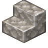

磨制粗玄岩楼梯
Polished Dolerite Stairs
英文名: Polished Dolerite Stairs命名空间 ID:
atmospheric:polished_dolerite_stairs类型: 方块所属模组: Atmospheric资料检索: 🔎 在 MC百科 搜索「磨制粗玄岩楼梯」所属标签
合成获得 (3)
有序合成Atmospheric
原始 JSON
{
"type": "minecraft:crafting_shaped",
"category": "building",
"key": {
"#": {
"item": "atmospheric:polished_dolerite"
}
},
"pattern": [
"# ",
"## ",
"###"
],
"result": {
"count": 4,
"id": "atmospheric:polished_dolerite_stairs"
}
}切石机Atmospheric
原始 JSON
{
"type": "minecraft:stonecutting",
"ingredient": {
"item": "atmospheric:dolerite"
},
"result": {
"count": 1,
"id": "atmospheric:polished_dolerite_stairs"
}
}切石机Atmospheric
原始 JSON
{
"type": "minecraft:stonecutting",
"ingredient": {
"item": "atmospheric:polished_dolerite"
},
"result": {
"count": 1,
"id": "atmospheric:polished_dolerite_stairs"
}
}